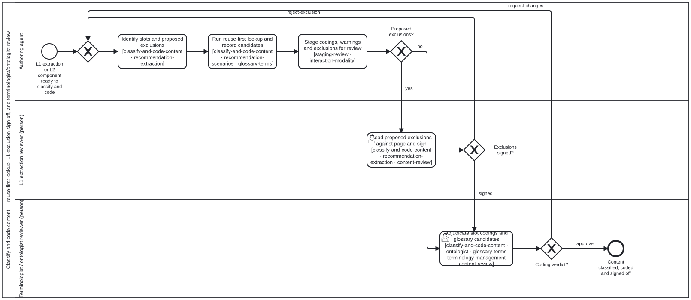

Generated from
smart-base/skills/content/authoring-who-smart-guidelines/classify-and-code-content.md— do not edit here.
classify-and-code-content
Skill id:
classify-and-code-content· Package:authoring-who-smart-guidelines· Methodology:terminology-coding· Process:classify-and-code-content.bpmn(Process_ClassifyAndCodeContent) · Tool:terminology-lookup· Bean:folio-assistant-4nfs
An agent proposes classifications, codes, and coverage exclusions; a person in
the named reviewer lane judges and signs them. This skill governs all three
lanes of classify-and-code-content.bpmn:
authoring-agentlane — identifies classifiable slots in L1/L2 content, runsterminology-lookupdown the four-rung reuse-first ladder ofterminology-coding, records provenance (declared,context,inferred) andstatus: "candidate", and stages the candidate codings and any proposed L1 coverage exclusions for human review.l1-extraction-reviewerlane — a person acting asl1-extraction-reviewer(owner ruling 3b, 2026-10-12) reads each proposed exclusion inexclusions.proposed.jsonagainst the printed page insections/page-NNN.mdand either signs it (signedOffBy) or rejects it back to extraction curation.terminologist(terminologist / ontologist reviewer) lane — a person acting asterminologistreviews the candidate concept codings, SKOS mapping predicates (exactMatchvscloseMatchperontologist), and proposed local glossary terms (status: "candidate"perglossary-terms), and records the review verdict.
Input and output
- Input contract:
input.schema.json - Output contract:
output.schema.json
Step 1 — Agent: classify and code slots with terminology-lookup
For each slot in an L1 extraction or L2 component, run the terminology-lookup
Tool:
bun run smart-base/scripts/terminology-lookup.ts \
--slot <condition|intervention|persona|medicine|domain|business-process|recommendation-strength|recommendation-direction|evidence-certainty> \
--query <term-or-code> \
[--vocabulary <guide-vocabulary.json>] \
[--generic <smart-base-generic-personas.json>] \
[--scheme <scheme-id>] \
[--out <result.json>]
Follow the reuse-first precedence of
terminology-coding §2:
- Rung 1 (
rung-1-target-guide): reuse the target guide’s own persona or business process froml1-scenario-vocabulary/v1whenever its scope covers the statement. - Rung 2 (
rung-2-smart-base): fall back tosmart-basegeneric personas (DAK.Persona.*), GRADEcode-lists/*.json, or theguideline-domainSKOS scheme (clinical,public-health,health-system-strengthening). - Rung 3 (
rung-3-external-standard): resolve against the slot’s authoritative external standard (ICD-11,ICHI/CDHIv2,ISCO-08,ATC), distinguishingskos:exactMatchfromskos:closeMatchperontologist. - Rung 4 (
rung-4-local-candidate):- For an unmatched persona or domain concept, record a local glossary
candidate (
status: "candidate",source: "extracted") perglossary-termsand emitWARNING <slot>-glossary-candidate. - For an unmatched business process, never invent a process: record
could-not-determineand emitWARNING process-not-determined.
- For an unmatched persona or domain concept, record a local glossary
candidate (
Step 2 — l1-extraction-reviewer: read proposed exclusions against the page and sign
When recommendation-candidates writes
exclusions.proposed.json, every entry carries:
{
"signerRole": { "role": "l1-extraction-reviewer" }
}
and no signedOffBy field. Until a person in the l1-extraction-reviewer lane
signs the entry, l1-coverage counts the sentence as unaccounted and
coverage remains below 100 %.
To review a proposed exclusion in Lane_ExtractionReviewer of
classify-and-code-content.bpmn:
- Open the printed page beside the work list. Locate
location(p<page>:s<n>) inlibrary/<doc_id>/sections/page-<NNN>.md(and the corresponding rendered page image when layout is ambiguous). - Read the sentence in place. Verify the surrounding paragraph, heading, and table context — never judge an exclusion from the isolated sentence string alone.
- Check the proposed
reasonagainst the five closed reasons:background-fact— epidemiology, disease burden, history, or biological fact with no normative action for a guideline user;manufacturer-statement— a product insert or manufacturer specification quoted as context rather than a WHO recommendation;editorial— licence text, imprint, how-to-read-this-document prose, chapter navigation checkpoints, or glossary definitions;research-question— a gap or priority for future research, not a current practice or recommendation;duplicate-of:<id>— a verbatim or near-verbatim repetition of a statement already captured under<id>, verified against<id>’s statement text.
- Sign or reject:
- Sign: if the sentence is genuinely non-normative for the stated reason,
record
signedOffBy(the reviewer’s handle) and timestamp in the curation / exclusions file and re-runl1-recommendation-candidatesso coverage updates. - Reject: if the sentence states a recommendation, an implementation
practice, or a remark that belongs in L1, reject the exclusion with a
reason so the
authoring-agentre-curates the location as a node.
- Sign: if the sentence is genuinely non-normative for the stated reason,
record
Step 3 — terminologist: review candidate codings and glossary candidates
In Lane_Terminologist of
classify-and-code-content.bpmn,
a person acting as terminologist (equipped with
ontologist,
glossary-terms,
and terminology-management)
judges each staged coding:
- Scheme and rung check: verify that the slot was coded against the scheme
named in
terminology-coding§1 and that no higher reuse rung held an applicable concept. - Precision check (
exactMatchvscloseMatch): confirm that a narrower or broader concept was not asserted asexactMatch. - Candidate glossary adjudication: for each Rung 4 glossary candidate
(
status: "candidate"), either promote it tostatus: "authored"(checking definition quality andskos:broader/skos:closeMatchlinks), replace it with an existing code from Rungs 1–3, or reject it. - Record verdict: record the review decision (
approve,request-changes, orreject) in the mapping (review: {by, at}) or componentQaReview.
Processes that run this skill
This skill has its own process: Classify and code content.

| process | step(s) that name it |
|---|---|
| Classify and code content | Identify slots and proposed exclusions [classify-and-code-content · recommendation-extraction]; Run reuse-first lookup and record candidates [classify-and-code-content · recommendation-scenarios · glossary-terms]; Read proposed exclusions against page and sign [classify-and-code-content · recommendation-extraction · content-review]; Adjudicate slot codings and glossary candidates [classify-and-code-content · ontologist · glossary-terms · terminology-management · content-review] |